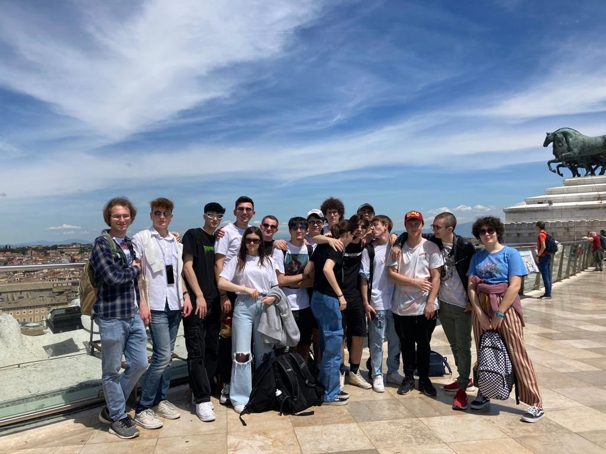

Giovedì 27 aprile, abbiamo visitato l'Altare della Patria.
Il Monumento nazionale a Vittorio Emanuele II o Vittoriano, chiamato Altare della Patria, è un monumento nazionale italiano situato a Roma, in piazza Venezia, sul versante settentrionale del colle del Campidoglio, opera dell'architetto Giuseppe Sacconi. È situato al centro della Roma antica e collegato a quella moderna grazie a strade che si dipartono a raggiera da piazza Venezia.
La sua costruzione iniziò nel 1885 e i lavori si conclusero nel 1935: tuttavia, già nel 1911, il monumento fu inaugurato ufficialmente ed aperto al pubblico, in occasione delle celebrazioni del 50º anniversario dell'Unità d'Italia. Da un punto di vista architettonico è stato pensato come un moderno foro, un'agorà su tre livelli collegati da scalinate e sovrastati da un portico caratterizzato da un colonnato.
Ha un grande valore rappresentativo, essendo architettonicamente e artisticamente incentrato sul Risorgimento, il complesso processo di unità nazionale e liberazione dalla dominazione straniera portato a compimento sotto il regno di Vittorio Emanuele II di Savoia, cui il monumento è dedicato: per tale motivo il Vittoriano è considerato uno dei simboli patri italiani. Il Vittoriano racchiude l'Altare della Patria, dapprima un'ara della dea Roma e poi, dal 1921, anche sacello del Milite Ignoto. Poiché questo elemento è percepito come il centro emblematico dell'edificio, l'intero monumento è spesso chiamato Altare della Patria.

Fin dalla sua inaugurazione fu teatro di importanti momenti celebrativi. Ciò ha accentuato il suo ruolo di simbolo dell'identità nazionale. Le celebrazioni più importanti che hanno luogo al Vittoriano si svolgono annualmente in occasione dell'Anniversario della liberazione d'Italia (25 aprile), della Festa della Repubblica Italiana (2 giugno) e della Giornata dell'Unità Nazionale e delle Forze Armate (4 novembre), durante le quali il Presidente della Repubblica Italiana e le massime cariche dello Stato rendono omaggio al sacello del Milite Ignoto deponendovi una corona d'alloro in memoria dei caduti e dei dispersi italiani nelle guerre.
Il monumento ha un'ampia valenza simbolica rappresentando – grazie al richiamo della figura di Vittorio Emanuele II e alla realizzazione dell'Altare della Patria – un tempio laico dedicato metaforicamente all'Italia libera e unita e celebrante – in virtù della tumulazione del Milite – il sacrificio per la patria e per gli ideali connessi.